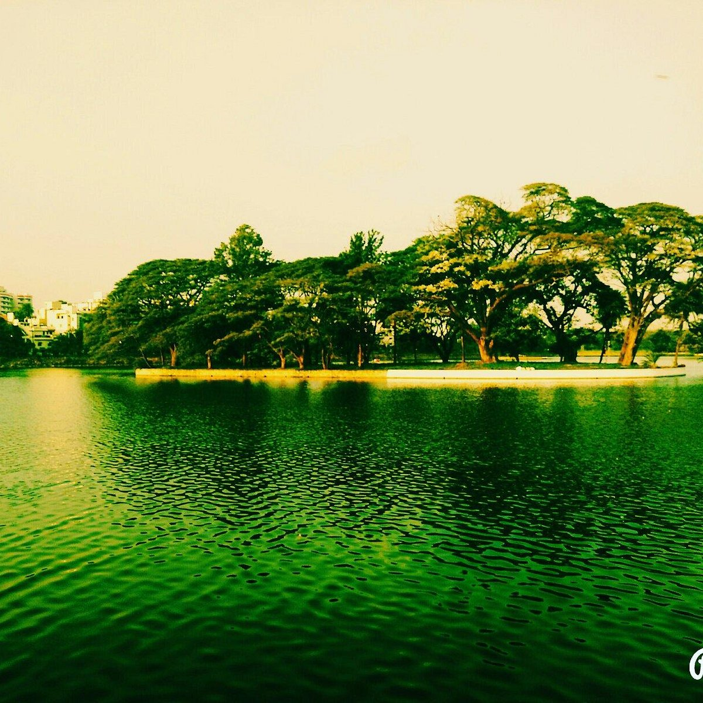
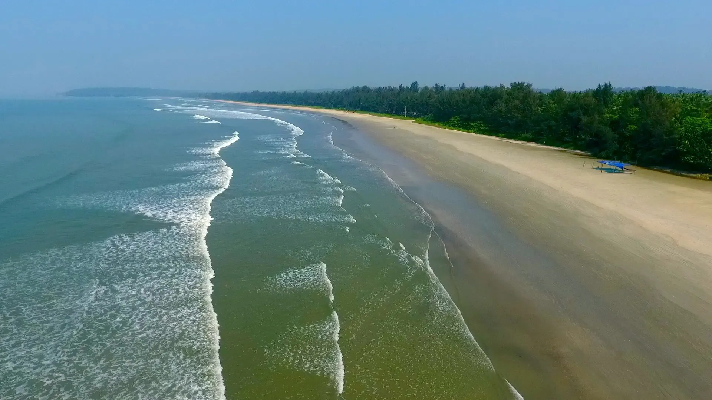

Narrow lanes wind past ancient temples in Ulsoor, an old neighborhood near the city center. Namesake Ulsoor Lake is popular for boating and has a walking trail along the shore. Close by, Gangadhar Chetty Road and its adjoining streets are lined with stylish home decor stores and boutiques selling handwoven saris. Centuries-old Someshwara Temple features colorful pillars covered with intricately carved Hindu deities
Kannur is a coastal city in the south Indian state of Kerala. It was once an ancient trading port. Enduring monuments such as 16th-century St. Angelo Fort, once occupied by European colonial forces, show the city’s significant role in the spice trade. Housed in a former palace, the Arakkal Museum highlights Kerala's one Muslim royal family. The palm-fringed sands of Payyambalam Beach run along Kannur’s western shore.
Madikeri is a hill town in southern India. Framed by the Western Ghats mountain range, it’s known for the Raja’s Seat, a simple monument overlooking forests and rice paddies. In the center, the 17th-century Madikeri Fort features 2 stone elephants at the entrance. Nearby, the domed Omkareshwar Temple is dedicated to the Hindu deity Shiva. To the northwest, cascading Abbey Falls is surrounded by spice plantations

Greece has the longest coastline in Europe and is the southernmost country in Europe. The mainland has rugged mountains, forests, and lakes, but the country is well known for the thousands of islands dotting the blue Aegean Sea to the east, the Mediterranean Sea to the south, and the Ionian Sea to the west.

Paris, city and capital of France, situated in the north-central part of the country. People were living on the site of the present-day city, located along the Seine River some 233 miles (375 km) upstream from the river’s mouth on the English Channel (La Manche), by about 7600 BCE. The modern city has spread from the island and far beyond both banks of the Seine.

The Eiffel Tower stands on four lattice-girder piers that taper inward and join to form a single large vertical tower. As they curve inward, the piers are connected to each other by networks of girders at two levels that afford viewing platforms for tourists. By contrast, the four semicircular arches at the tower’s base are purely aesthetic elements that serve no structural function. Because of their unique shape, which was dictated partly by engineering considerations but also partly by Eiffel’s artistic sense, the piers required elevators to ascend on a curve; the glass-cage machines designed by the Otis Elevator Company of the United States became one of the principal features of the building.